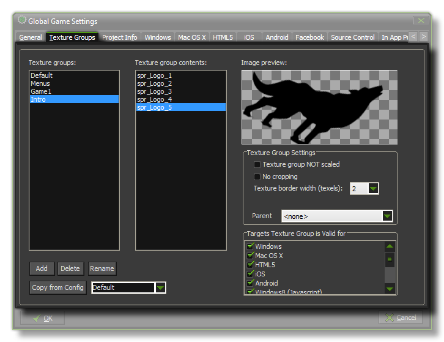

Here you can add, delete and rename texture groups. GameMaker:Studio permits you to assign each of the graphics resources (sprites, backgrounds, and fonts) to different texture groups to
try and optimise the number of texture swaps that the hardware does at any given time in your game. For that to work, you need to define the necessary texture groups from this tab, and then
go through each of the appropriate resource types and select the group you wish it to belong to from the drop down menu.
Once you have defined texture groups and assigned sprites to them you can see them in the list marked Texture Group Contents, and clicking on any of the sprites in this list will
show them in the image preview window on the right. This is particularly helpful when working on large projects and you need to be able to see which sprites have been assigned
to which group.
NOTE : If the sprites have multiple sub-images, then only the first sub-image is shown in the preview window.
Texture Groups are also linked to the Configurations settings. What this means is that you can define texture groups for each individual configuration
of your game, and then set the sprite or background asset assignments to these different groups and it will be "remembered" when you change to a different configuration. One use for this is that you could
make an iPad configuration and for that create 2048x2048px texture pages. You would then close the Global Game Settings and assign all the graphics assets to the appropriate texture group, and when
finished, you would then change to a different configuration (for HTML5, for example) and from the Texture Page tab, create new texture groups that are 512x512px, assigning the assets to these new groups.
There is also a button at the bottom of the page that permits you to copy texture group settings from one configuration to another.
You can also choose to export (or not) any given texture group to any given platform by simply ticking/un-ticking the appropriate boxes from the Target Texture Group Is Valid For section of the
window. In this way your configurations can be designed specifically for each target module and you can be sure that only those assets necessary for that platform will be compiled into your final game.
There is one other section on this page too, the Texture Group Settingand here there are extra options that are for use only in special circumstances:
- Texture Group Not Scaled - Flagging this will force GameMaker:Studio to not scale the texture group under any circumstances. This can be useful, especially when dealing with universal apps, as it allows you to put specific resources like fonts in a group of it's own to be used when the app is run on a specific device. For example, fonts can look great on a retina display, but when they are scaled down to draw on a normal display they can look terrible so you can assign them to a special non-scaling group.
- No Cropping - When you add sprites into GameMaker:Studio, if they have any "space" around them (ie 100% transparency) this is automatically cropped when it is added into the texture page. However, if you are using the sprite as a non-repeating texture for primitives etc... this means that the UV coordinates for texture mapping are no going to be correctly represented. in these cases you can flag this option and the sprite will be added to the texture page "as is", maintaining any transparencies that it may have around the edges.
- Texture Border Width - This function is for use when scaling is enabled and is especially designed for those textures that need to be scaled by large amounts, especially when using 3D models or scaling backgrounds. It increases the over-lap or pixel doubling amount around the edges of all assets on the page (the default is 2 pixels), so that when the images are scaled, there are no gaps (or seams) visible.
- Parent - Here you can choose any of the exising parent groups to be the "parent" group for the selected one. "Child" groups will inherit any changes made to the parent texture group.
For more information on these features see the section on Texture Pages.
NOTE: This functionality is limited to the Professional Version of GameMaker:Studio.